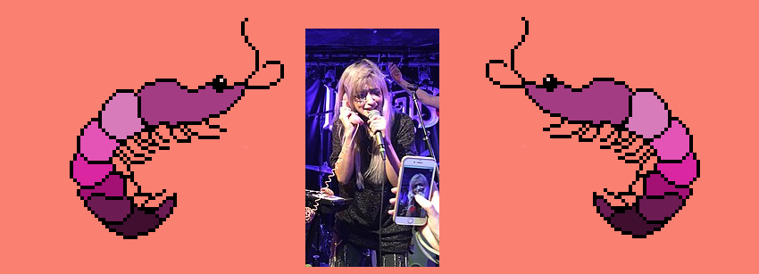
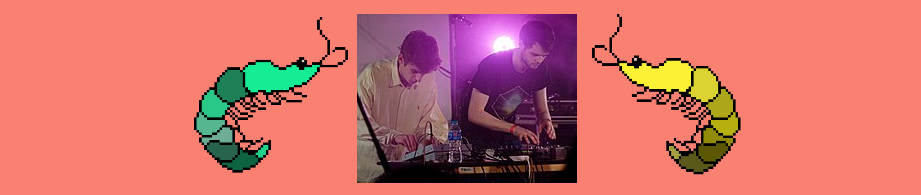

Kero Kero Bonito

Kero Kero Bonito (KKB) e uma banda Britanica de London (Que se especializa no estilo musical Idie Pop )

A banda consiste em uma vocalista Sarah Modori Perry (Ou mais conhecida como Sarah Bonito )

e dois produtores instumentais (Gus Lobban e Jamie Bulled)
O nome de sua banda intencionalmente abiguo (Com Uma Derivasao no Japones) Significa uma palavra onomatopeia para "coaxar de sapo" e um tipo de peixe
Em outro caso pode significar um nome de um passaro Brasileiro (O quero-quero )
A banda anteriomente faziam musicas influenciadas pelo J-PoP Lancando seu primeiro EP em 2018 (TOTEP) (Influenciado pelo indie rock )
Made By : Nookie (Pedro Henrique Noberto Martins)